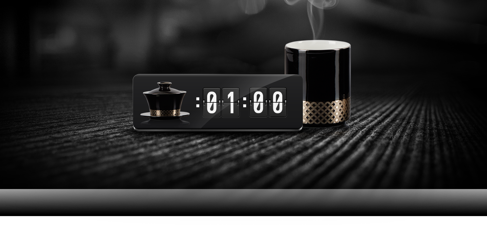

一分钟，学会选择适合自己喝的茶
茶对身体有益，但就像不同的人一样，不同的茶，也有不同的茶性。不同体质、不同
季节、不同时间，适合喝的茶都不一样，选对适合自己喝的茶很重要。6大茶类，
满足各种喝茶需求。8大名茶，满足各种口味喜好。一罐一泡，滋味、功效，面面俱到。
喝茶的季节
春饮花茶可以散发漫漫冬季积郁于人体之内的寒气，促进人体阳气生发。
花茶香气浓烈，香而不浮，爽而不浊，令人精神振奋，消除春困，提高人体机能效率。
花茶香气浓烈，香而不浮，爽而不浊，令人精神振奋，消除春困，提高人体机能效率。
夏季，气候炎热，暑气逼人，人体的津液大量耗损。
此时，以饮用性味苦寒的茶类为宜，用以消暑解热。
此时，以饮用性味苦寒的茶类为宜，用以消暑解热。
秋季，天气凉爽，风霜高洁，气候干燥，余热未消，人体津液未完全恢复平衡。此时，以饮用
乌龙茶一类的青茶为好，此茶性味介于红、绿之间，不寒不热，既能消除余热，又能恢复津液。
乌龙茶一类的青茶为好，此茶性味介于红、绿之间，不寒不热，既能消除余热，又能恢复津液。
冬季，北风凛冽，寒气袭人，人体阳气易损。此时，以选用味甘性温的茶为好，
以温育人体的阳气，全发酵茶有助消化去油腻之功，于冬季进补肥腻时有利。
以温育人体的阳气，全发酵茶有助消化去油腻之功，于冬季进补肥腻时有利。
喝茶的时间
人在睡了一夜之后，身体往往处于相对静止的状态，
喝红茶则可促进血液循环，同时能够祛除体内寒气，让大脑供血充足。
喝红茶则可促进血液循环，同时能够祛除体内寒气，让大脑供血充足。
自品清茶悠然味，偷得浮生半日闲。”午后人容易昏昏欲睡，茶叶中含有咖啡碱，因此喝适量的茶有助于提神益思。
人在吃了三餐之后，身体会积聚一些肥腻之物在消化系统内，
倘若晚饭后能够饮用一杯发酵过的茶，既暖胃又助消化。
倘若晚饭后能够饮用一杯发酵过的茶，既暖胃又助消化。